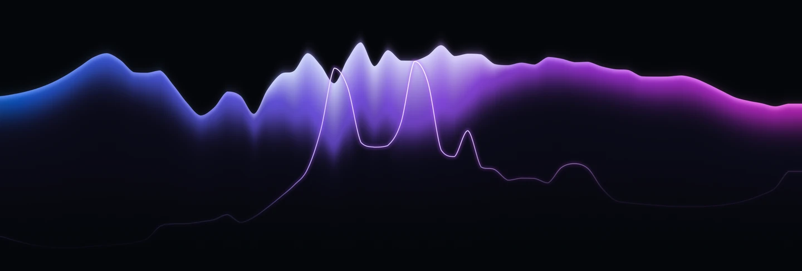
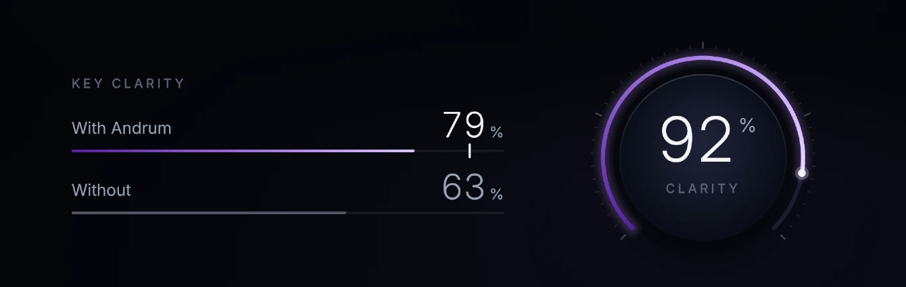
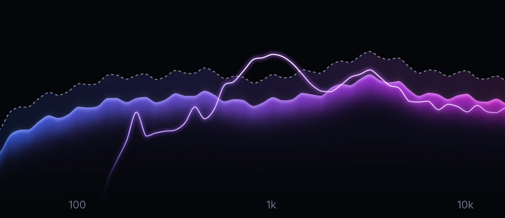
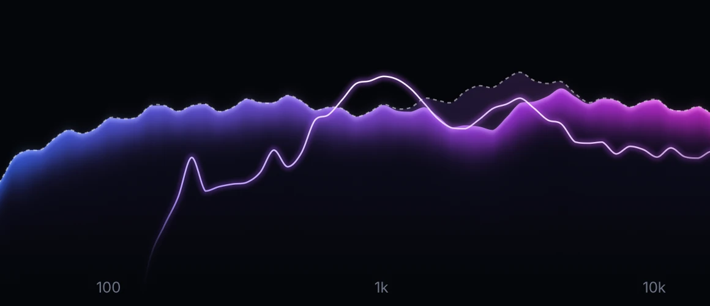
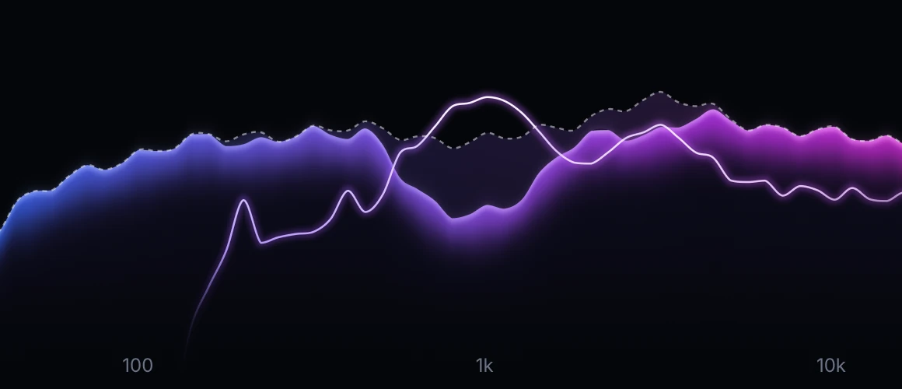
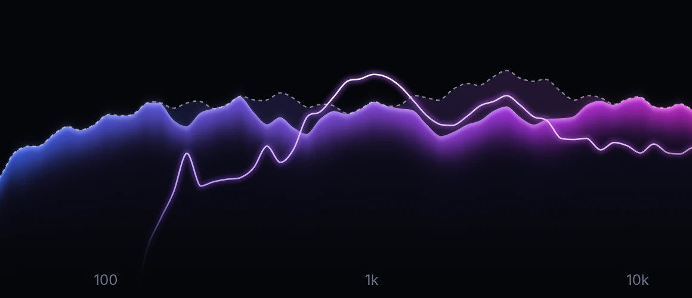
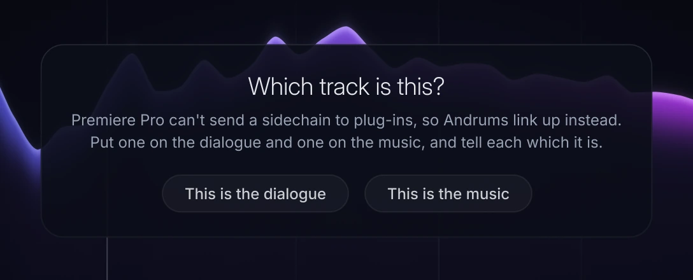

Make room for the voice.
Andrum turns the music down only where it covers the voice, and only while the voice is there. The mix stays full, and every word comes through.

- Deepest cut
- −17.9dB
- Voice clarity
- 82%
The demo didn’t load. Check your connection and press Listen again.
See what it does, as it does it.
The music glows like an aurora, from blue in the lows to pink in the air, and the voice runs through it as a fine line of light. Where Andrum turns the music down, the room it makes lights up. Hover over anything in the window and it tells you what it does.

Ask for clarity, not decibels.
Turn the dial to how clear the voice should be. Andrum makes the smallest cut that gets it there, and shows you how clear the voice is with it and without it.
When the voice already comes through, the music is left alone. At 100 %, Andrum makes the voice as clear as your Max cut allows.

Where other tools cut, and where Andrum does.
Every tool here can turn the music down for a voice. Andrum first works out where the music hides it: every five milliseconds it compares the voice with the music in 61 bands, the way your ear does, and turns down only there.

Sidechain compressor
Turns the whole track down whenever the voice is there, the bass and the air too.

Dynamic EQ
Turns down the bands you set by hand, whether or not that’s where the voice is hidden.

Spectral ducker
Cuts deepest where the voice is loudest, often right where it already comes through.

Andrum
Turns down only the bands where the music hides the voice, and only as far as it takes.
One moment of a voice over a pad and guitars. The fine line is the voice; the faded light above the music is what each tool turns down. This shows how each kind of tool works, not a measurement of any one product.
Measured, not claimed.
Every number here comes from Andrum’s own test suite, run on 1.8.2, the version you download.
- Only what it takes
- 2.7dB
- With the voice 6 dB over the music and the dial at 80 %, Andrum cuts 2.7 dB on average, and the voice is 90 % clear. Its engine run as a plain spectral ducker cuts 11.7 dB.
- Left alone
- 0.0dB
- With the voice 12 dB over the music, it’s already 93 % clear, and Andrum cuts nothing. Where the music is 30 dB over the voice, out of reach, it cuts nothing either.
- Clean Key
- 2.4dB
- What’s left of a 12 dB cut at 6.4 kHz while the singer says “s”. The vowels keep all 12, and a reverb tail keeps 0.8.
- Auto sensitivity
- 12.0 / 12.0dB
- The same room for a voice at −12 and at −42 dBFS, with no threshold to set. A fixed threshold gives 12.0 and 2.8.
- Latency
- 0samples
- Nothing for your DAW or editor to make up for. Up to 30 ms of lookahead when you want it, for a kick through a bass.
- Resolution
- 61bands
- A sixth of an octave apart, from 20 Hz to 20.5 kHz, worked out again every 5 ms.
- Precision
- 0.64dB
- The most a cut strays from the one Andrum means to make, anywhere in the spectrum, from 44.1 to 192 kHz.
- Transparency
- Bit-exact
- With no voice to make room for, the music comes out exactly as it went in, with lookahead or without.
- Load
- 5.5%
- Of one core on our test machine, at 48 kHz in stereo with everything on. When its inputs fall silent, Andrum rests.
In the tests the voice is a sung voice and the music is pink noise, with Max cut at 12 dB.
For songs and for picture.
In your DAW
Vocals over pads and walls of guitars. Rap over a dense beat. A kick through the bass, a lead over chords. Reverb that steps back under the words and blooms in the gaps.
Logic Pro, Ableton Live, FL Studio, Cubase, Studio One, Bitwig Studio, Reaper and GarageBand.
In your video editor
Dialogue over a music bed, without drawing a single volume curve. Video editors can’t send a sidechain to a plug-in, so two Andrums link up instead: one on the dialogue, one on the music.
Premiere Pro, DaVinci Resolve and Final Cut Pro.

Try it free. Buy it once.
€59
One licence, no subscription. VAT included.
- Every feature, as an Audio Unit, a VST3 and a standalone app
- For one person, on up to two computers
- Every 1.x update included
- For any work, commercial and broadcast included
- No iLok and no account: Andrum goes online once to fetch your licence, then works offline
- 14 days to change your mind: your money back, no questions asked
Your licence key arrives by e-mail the moment you pay. How to add it.
Thank you.
Your licence key is on its way to your inbox, in the receipt from Lemon Squeezy.
- Copy the licence key from the receipt.
- Open Andrum and click Trial at the bottom of its window.
- Click Paste license. Andrum fetches your licence once and works offline from then on.
Download the free trial
Every feature, free for 7 days. After that, Andrum lets the sound through untouched and keeps every setting, so your sessions still open.
The first time you open the installer. This version isn’t signed by Apple or Microsoft yet, so your computer asks you once.
On a Mac, open the disk image and double-click Install Andrum. When macOS stops it, open System Settings, then Privacy & Security, click Open Anyway beside Install Andrum, and confirm. On Windows, if Windows says it protected your PC, click More info, then Run anyway.
Then rescan plug-ins in your app if it doesn’t find Andrum by itself. Bought it? Add your licence. Version 1.8.2. File checksums: SHA-256.
Questions.
What does the clarity percentage mean?
How much of the voice a listener can make out over the music, as Andrum’s model of the ear measures it: 0 % is fully masked, 100 % fully clear. You choose the clarity you want on the dial, and Andrum shows what it reached, with its cut and without it.
Does Andrum change the voice?
No. Andrum only changes the track it’s on. The voice it listens to passes through untouched.
Which apps does it work in?
Logic Pro, Ableton Live, FL Studio, Cubase, Studio One, Bitwig Studio, Reaper and GarageBand, and the video editors Premiere Pro, DaVinci Resolve and Final Cut Pro. On a Mac, Andrum comes as an Audio Unit and a VST3; on Windows, as a VST3. Both come with a standalone app, and Andrum shows up in your plug-in list under David HJ Lindberg.
Does it work in Pro Tools?
Not yet. Pro Tools only loads AAX plug-ins, and Andrum isn’t available as AAX yet.
Is it only for vocals?
No. Anything can make room for anything: a kick through a bass, a snare through synths, a lead over chords, reverb and delay that step back under a vocal. There are 18 presets to start from.
What happens when the trial ends?
Andrum lets the sound through untouched until you add a licence. Nothing in your sessions breaks, and once you add a licence it works exactly as before.
How do I add my licence?
Right after you pay, Lemon Squeezy e-mails you a receipt with your licence key. Copy the key, open Andrum, click Trial at the bottom of its window, then Paste license. On a computer without internet, get your licence here and add it as a file.
Can I use it on more than one computer?
Yes. One licence covers one person on up to two computers, Mac or Windows: paste the same key on each. When you get a new computer, remove the licence from the old one in Andrum and add it on the new one.
Does it need the internet or an iLok?
No iLok and no account. Andrum goes online once, when you paste your licence key, to fetch your licence. After that it never connects to the internet, and your licence keeps working offline.
Can I get a refund?
Yes. If Andrum isn’t right for you, write to me@davidhjalmarlindberg.com within 14 days of buying and you get your money back in full, no questions asked. More about refunds.
Who takes the payment?
Lemon Squeezy, which sells Andrum for us as merchant of record. It takes the payment, adds the right VAT or sales tax for your country (the €59 includes it) and e-mails your receipt with the licence key.
How do I remove Andrum?
On a Mac, open the Andrum disk image and double-click Uninstall Andrum. On Windows, open Settings, then Apps, choose Andrum and click Uninstall.